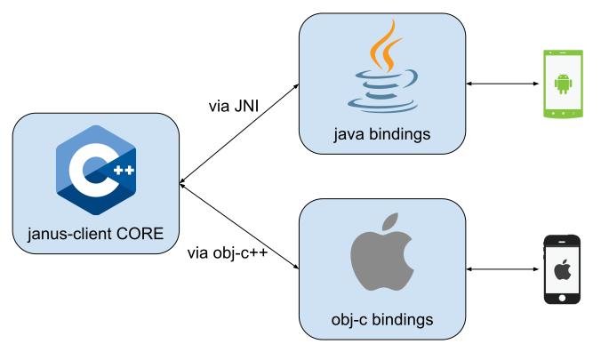

PetsApp
How i started my fake startup with the Janus Mobile SDK
Naples (IT)
September 23rd-25th 2019
Hello!
Boris
PetsApp
A video chat for puppies
Application requirements
- A user should connect to his own room
- Each pet should have a streaming device
- The user should watch all the pet feeds at the same time
A basic video room!
Server requirements
- { User, Room } Management API
- WebRTC Signaling Server
- { MC, SF } Unit
Client requirements
- Cross-Platform application (iOS, Android, Linux)
- Native Application
- No vendor lock-in
No solutions available...
UNTIL NOW!
handcrafted with by @helloiampau and Meetecho S.R.L.
handcrafted with by @helloiampau and Meetecho S.R.L.
- Cross-Platform SDK
- Mobile-First (iOS, Android)
- Supports Janus API out-of-the-box
- Extensible with custom protocols and plugins
- Open Source

by Dropbox
Djinni is a tool for generating cross-language type declarations and interface bindings. It's designed to connect C++ with either Java or Objective-C.
Djinni can be used to interface cross-platform C++ library code with platform-specific Java and Objective-C on Android and iOS.
janus-client.djinni
ice_server = record {
url: string;
username: string;
password: string;
}
janus_conf = interface +j +o {
url(): string;
iceServers(): list;
webrtc(): map;
}
arg_bundle = interface +c {
setString(key: string, value: string);
getString(key: string): string;
setInt(key: string, value: i32);
getInt(key: string): i32;
setLong(key: string, value: i64);
getLong(key: string): i64;
setBool(key: string, value: bool);
getBool(key: string): bool;
static create(): arg_bundle;
}
transport_delegate = interface +j +o {
onMessage(response: string, context: arg_bundle);
}
transport_type = enum {
HTTP;
}
ready_state = enum {
OFF;
INIT;
READY;
CLOSING;
ERROR;
}
info = record {
name: string;
version: i32;
}
constraints = record {
audio: bool;
video: bool;
offerToReceiveAudio: bool;
offerToReceiveVideo: bool;
}
command = interface +j +o {
action(signaling: signaling, peer: peer, data: string);
}
janus_event = interface +c {
data(): string;
jsep(): jsep;
}
plugin_delegate = interface +j +o {
onEvent(data: janus_event, context: arg_bundle);
onMediaChanged(media: media);
onHangup();
onDetach();
onOffer(sdp: string): string;
onAnswer(sdp: string): string;
}
plugin = interface +c +j +o {
init(signaling: signaling, peer: peer);
detach();
hangup();
setDelegate(delegate: plugin_delegate);
dispatch(name: string, data: arg_bundle);
onEvent(data: janus_event, context: arg_bundle);
onMediaChanged(media: media);
onHangup();
onDetach();
onOffer(sdp: string, context: arg_bundle);
onAnswer(sdp: string, context: arg_bundle);
onIceCandidate(candidate: candidate);
}
plugin_factory = interface +j +o {
info(): janus_plugin_info;
create(): plugin;
}
peer_factory = interface +j +o {
create(conf: janus_conf, delegate: plugin): peer;
}
camera_device = enum {
FRONT;
REAR;
}
local_video_track = interface +j +o {
start(camera: camera_device, width: i32, height: i32, fps: i32);
stop();
changeResolution(width: i32, height: i32, fps: i32);
switchCamera();
}
local_audio_track = interface +j +o {
start();
stop();
}
remote_video_track = interface +j +o {}
audio_device = enum {
EARPIECE;
SPEAKER;
}
remote_audio_track = interface +j +o {
setOutputDevice(device: audio_device);
}
media = interface +j +o {
localVideoTrack(): local_video_track;
localAudioTrack(): local_audio_track;
remoteVideoTrack(): remote_video_track;
remoteAudioTrack(): remote_audio_track;
}
peer = interface +j +o {
createOffer(constraints: constraints, context: arg_bundle);
createAnswer(constraints: constraints, context: arg_bundle);
setLocalDescription(jsep: jsep);
setRemoteDescription(jsep: jsep);
addIceCandidate(candidate: candidate);
getMedia(): media;
close();
}
janus_plugin_info = record {
id: string;
name: string;
version: i32;
}
jsep = interface +c {
type(): string;
sdp(): string;
hasMedia(media: string): bool;
static create(type: string, sdp: string): jsep;
}
candidate = record {
sdpMid: string;
sdpMLineIndex: i32;
candidate: string;
completed: bool;
}
signaling = interface +j +o {
message(body: string, context: arg_bundle);
jsep(body: string, jsep: jsep, context: arg_bundle);
trickle(candidate: candidate);
attach(id: string, context: arg_bundle);
detach();
hangup();
}
protocol = interface +j +o {
info(): info;
readyState(): ready_state;
close();
plugins(): list;
attach(pluginId: string, context: arg_bundle);
}
protocol_factory = interface +j +o {
bootstrap(conf: janus_conf, platform: platform, delegate: janus_delegate): protocol;
}
janus_error = record {
code: i32;
reason: string;
}
janus_delegate = interface +j +o {
onJanusError(error: janus_error);
onPluginEnabled(id: string, handle: plugin, context: arg_bundle);
}
platform = interface +c {
static create(): platform;
registerProtocolFactory(factory: protocol_factory);
getProtocol(conf: janus_conf, delegate: janus_delegate): protocol;
registerPeerFactory(factory: peer_factory);
createPeer(conf: janus_conf, delegate: plugin): peer;
registerPluginFactory(pluginFactory: plugin_factory);
getPlugin(id: string): plugin;
getPlugins(): list;
}
janus = interface +c {
static create(platform: platform): janus;
init(conf: janus_conf, delegate: janus_delegate): ready_state;
close(): ready_state;
readyState(): ready_state;
plugins(): list;
attach(pluginId: string, context: arg_bundle);
}
settings.gradle
include ':app'
include ':janus'
project(':janus').projectDir = new File(settingsDir, './third_party/janus-client/platforms/android/janus')
app/build.gradle
apply plugin: 'com.android.application'
android {
compileSdkVersion 28
defaultConfig {
applicationId "com.github.helloiampau.petsapp"
minSdkVersion 16
targetSdkVersion 28
versionCode 1
versionName "1.0"
testInstrumentationRunner "android.support.test.runner.AndroidJUnitRunner"
}
buildTypes {
release {
minifyEnabled false
proguardFiles getDefaultProguardFile('proguard-android-optimize.txt'), 'proguard-rules.pro'
}
}
compileOptions {
compileOptions {
sourceCompatibility JavaVersion.VERSION_1_8
targetCompatibility JavaVersion.VERSION_1_8
}
sourceCompatibility JavaVersion.VERSION_1_8
targetCompatibility JavaVersion.VERSION_1_8
}
}
dependencies {
implementation project(path: ':janus')
implementation fileTree(dir: 'libs', include: ['*.jar'])
implementation 'com.android.support:appcompat-v7:28.0.0'
implementation 'com.android.support.constraint:constraint-layout:1.1.3'
testImplementation 'junit:junit:4.12'
androidTestImplementation 'com.android.support.test:runner:1.0.2'
androidTestImplementation 'com.android.support.test.espresso:espresso-core:3.0.2'
}
Code

Entities
Communication is event driven based on delegate pattern.
Initialization Code
Janus janus = JanusFactory.create(Commands._context);
JanusConfImpl conf = new JanusConfImpl();
conf.url("http://janus.helloiampau.com/janus");
ReadyState readyState = janus.init(conf, new PetsAppJanusDelegate(janus));
if(readyState != ReadyState.READY) {
Status.get().error("Unable to connect");
return;
}
janus.attach("janus.plugin.videoroom", ArgBundle.create());
Initialization Code
Janus janus = JanusFactory.create(Commands._context);
JanusConfImpl conf = new JanusConfImpl();
conf.url("http://janus.helloiampau.com/janus");
ReadyState readyState = janus.init(conf, new PetsAppJanusDelegate(janus));
if(readyState != ReadyState.READY) {
Status.get().error("Unable to connect");
return;
}
janus.attach("janus.plugin.videoroom", ArgBundle.create());
Initialization Code
Janus janus = JanusFactory.create(Commands._context);
JanusConfImpl conf = new JanusConfImpl();
conf.url("http://janus.helloiampau.com/janus");
ReadyState readyState = janus.init(conf, new PetsAppJanusDelegate(janus));
if(readyState != ReadyState.READY) {
Status.get().error("Unable to connect");
return;
}
janus.attach("janus.plugin.videoroom", ArgBundle.create());
JanusDelegate
@Override
public void onJanusError(JanusError error) {
Status.get().error(error.getReason());
}
@Override
public void onPluginEnabled(String id, Plugin handle, ArgBundle context) {
if(id.equals("janus.plugin.videoroom")) {
Status status = Status.get();
handle.setDelegate(new PublisherPluginDelegate());
status.plugin(handle);
status.session(this._janus);
return;
}
if(id.equals("janus.plugin.videoroom.subscriber")) {
Status status = Status.get();
String subscriberid = context.getString("subscriber-id");
handle.setDelegate(new SubscriberPluginDelegate(subscriberid));
Pet pet = status.pets().getValue().get(subscriberid);
pet.setHandle(handle);
return;
}
}
JanusDelegate
@Override
public void onJanusError(JanusError error) {
Status.get().error(error.getReason());
}
@Override
public void onPluginEnabled(String id, Plugin handle, ArgBundle context) {
if(id.equals("janus.plugin.videoroom")) {
Status status = Status.get();
handle.setDelegate(new PublisherPluginDelegate());
status.plugin(handle);
status.session(this._janus);
return;
}
if(id.equals("janus.plugin.videoroom.subscriber")) {
Status status = Status.get();
String subscriberid = context.getString("subscriber-id");
handle.setDelegate(new SubscriberPluginDelegate(subscriberid));
Pet pet = status.pets().getValue().get(subscriberid);
pet.setHandle(handle);
return;
}
}
PluginDelegate
@Override
public void onEvent(JanusEvent data, ArgBundle context) {
try {
JSONObject event = new JSONObject(data.data());
if(event.getString("videoroom").equals("joined")) {
Commands.updatePets(event.getJSONArray("publishers"));
Commands.route("room");
}
} catch (Exception e) {
e.printStackTrace();
}
}
@Override
public void onMediaChanged(Media media) {}
@Override
public void onHangup() {}
@Override
public void onDetach() {}
@Override
public String onOffer(String sdp) {
return sdp;
}
@Override
public String onAnswer(String sdp) {
return sdp;
}
Send Commands
Status status = Status.get();
Plugin handle = status.plugin().getValue();
ArgBundle bundle = ArgBundle.create();
bundle.setString("display", username);
bundle.setInt("room", 1234);
handle.dispatch("join", bundle);
Supported plugins
- Echo Test
- Videoroom
- Streaming
Code